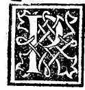

CAPITEL XX¶
Von den über andern Säulen befindlichen Säulen an den Ge- bäuden.

Da ich bis jetzt nicht von den runden Säulen gesprochen, die an den Gebäuden mitunter über den andern aufgestellt zu werden pflegen, wie in unserm Kloster des heiligen Kreuzes in Florenz, in seinem würdigen Kreuzgange und andern Orten in Italien, wie sie angeordnet sein müssen, damit sie sowohl dem Gewichte als der Schönheit gemäss richtig situirt seien; was uns unser Vitruv durch das folgende Citat in seinem fünften Buche klar macht, wo er in folgender Form spricht, nämlich: „Die obern Säulen sind um den vierten Theil kleiner als die untern zu construiren, weil die, welche unterhalb stehen, zum Tragen der Last stärker sein müssen als die obern nicht minder wie man auch die Natur des Entstehenden nachahmen muss, wie bei den glatten Bäumen, der Tanne, Cypresse, Pinie, von denen keine von den Wurzeln ab dicker wird.
Von da wachsend geht sie in die Höhe, indem sie mit natürlicher gleichmässiger Contraction bis zum Gipfel wächst. Wenn daher die Natur des Entstehenden es so verlangt, so ist es richtig angelegt, wenn sowohl in der Höhe als Dicke das Obere knapper wird als das Untere. Die Orte für Basiliken, welche mit den Märkten verbunden, muss man in den möglichst wärmsten Theilen bauen, damit sich im Winter von der Witterung unbelästigt die Kaufleute darin versammeln können, und ihre Breiten mögen aus nicht weniger als dem dritten Theile, aus nicht mehr als der Hälfte der Längen bestehen, wofern es nicht die Beschaffenheit des Orts verhindert und gezwungen haben sollte, die Symmetrie auf andre Art abzuändern.
Wenn aber der Ort in der Länge geräumiger sein wird” u. s. w. Und ein wenig weiter unten replicirt er folgendermassen: Die obern Säulen möge man kleiner als die untern, wie vorher geschrieben worden, einrichten. Das Schutzdach, was zwischen den obern und untern Säulen, scheint ebenfalls um den vierten Theil schmäler werden zu müssen als die obere Säulenreihe war, damit nämlich die, welche über den Emporen der Basilika spazieren gehen, von den Händlern nicht bemerkt werden.
Die Epistyle, Zophora, Krönungen mögen nach dem Ebenmass der Säulen wie wir im dritten Buche beschrieben, entwickelt werden; nicht weniger können compactere Fronten von Basiliken die höchste Würde und Schönheit erhalten, in welcher Art ich die an der Julischensäule mit Fenstern angeordnet und auszuführen besorgt, deren Proportionen der Symmetrie gemäss folgendermassen angeordnet sind. Das mittlere Schutzdach u. s. w. Diese höchst werthvoUe Autorität, meine Geliebtesten, hat als zu gewissen Zwecken bezüglich des Doms von Mailand im Jahre 1498, in seiner uneinnehmbaren Burg in der sogenannten Camera demoroni in Gegenwart des erhabenen Herzogs jenes L.
Sforza mit dem Ehrwürdigsten Cardinal Hippolyt von Este, seinem Verwandten, dem Erlauchtesten S. Galeazzo Sanseverino, meinemspeciellen Patron und vielen anderen sehr berühmte Männern wie es sich Angesichts ähnlicher Fälle trifft, unter andern der ausgezeichnete Ehrwürdigste berühmteste Doctor und Graf und Ritter Messer Onofrio de Paganini, genannt da Scueli war, derselbe ebenda öffentlich ausgezeichnet auseinandergesetzt und dadurch in allen Anwesenden die grösste Liebe für unsern Vitruv erweckt, in dessen Werken er von der Wiege an unterrichtet zu sein schien.
Kurz, jener Philosoph will, ohne mich zu sehr über jenes hinaus zu ergehen, dass über den am Boden stehenden Säulen, über denen wie angegeben, der Epistyl mit allen seinen Theilen Zophoros, Kranz, Gesimse u. s. w. befestigt wird, dass wenn über jenen andere angebracht werden, wie man sie bei Bühnen und Loggien anzuwenden pflegt; diese gleichermassen das Gewicht zu tragen haben, aber nicht so viel, wie die unteren.
Und indem er die Wahrheit sagt; führt er das nothwendige und richtige Verhältniss an, dass jene oberhalb um den vierten Theil kleiner sein müssen, als die untern, sofern jene untern aus dem angegebenen Grunde stets fester sein müssen, und zu seiner Bekräftigung führt er das Beispiel der Lehrerin aller Dinge, d. h. der Natur an, die wie man an den Bäumen und andern Pflanzen, Tannen, Cypressen, Pinien sieht, in welchen sich zeigt, dass stets die Gipfel oder Spitzen sehr viel schwächer sind als ihre Wurzeln und Fundament; also zeigt, wie er entscheidet, die Natur uns dieses, wir können daher nicht irren, ihr darin nachzuahmen; indem er als Beispiel dazu anführt, die untern Säulen seien an den Gebäuden Stamm, Wurzel und Fundament für alles über ihnen stehende, wie es auch der Fall sei mit dem Stamm des Baumes, der Stütze für alle andern Aeste, welche darüber sich befinden, die stets schwächer sind als der Fuss.
Aber das genaue Quantum nach bestimmter Proportion ist uns unbekannt.
Aber weil er als Kunst der Nachahmung der Natur, soweit es möglich, nicht genau das nothwendige Verhältniss und Beschaffenheit der Aeste und Spitzen an denselben zu ihren Stumpf oder Stamm und Beinen nahm, da jenes uns nie bekannt sein kann, wenn nicht, sofern es uns vom Höchsten gestattet wäre, wie Plato in seinem Timäus sagt, zu irgend einem geheimen Zwecke, nämlich: „Denn diese Dinge sind Gott allein bekannt, und dem, der Gottes Freund ist” u. s. w., darum damit die Kunst nicht herumtappe, sondern stets mit so viel Gewissheit, wie möglich, gibt er ihr uns bekannte und bestimmte Proportion, die rational ist, und stets durch eine Zahl erklärt werden kann, indem er sagt, Jene obern müssen um den vierten Theil kleiner gemacht werden als die untern, da sie nicht für so viel Gewicht bestimmt, wie man offenbar begreift, wie an jener Stelle er selbst sagt, sie bei gewissen Fenstern aufgestellt zu haben, und er ordnete sie so an, wie es mit Berücksichtigung jener Symmetrie und Proportionen geschehen musste, unbeschadet, dass in diesem und auch in andern Theilen der Bauwerke die Natur des Orts nicht hindert, dies beobachten zu können, und ausserdem dabei uns nicht zwänge, besagte Symmetrie und ihre Proportionen abzuändern.
Denn, wie wir gesehen, dass man heutzutage der Form des Bauplatzes gemäss bauen müsse, so braucht man auch nicht dem Rechnung zu tragen, in jeder Hinsicht die gebührenden Symmetrien der Verhältnisse durchzuführen, sondern wir sind mit Gewalt gezwungen, zu bauen wie weit es die Lage uns gestattet.
Und darum ist es kein Wunder, wenn man zu unsern Zeiten viele Gebäude sieht, die in Ecken und Facen monströs erscheinen, weil sie nicht vollständig das Nothwendige haben bewahren können; und darum das für eure und zwar sowohl bei Gebäuden wie in der Sculptur zwingenden Anordnungen oben gegebene Document euch stets mehr dem Viereckigen und Runden und auch ihren Theilen soweit es möglich ist anzuschliessen, da ihr, von der Enge das Orts behindert, stets dafür empfohlen sein werdet, und in keiner Art eure Werke getadelt (sein werden).
Und dies möge euch als heilsamer Wink dienen. Und die besagten obern Säulen müssen genau im Niveau über den untern aufgestellt werden, ihre kleinen Basen entsprechend den Capitellen, Basen und Stereobaten der untern, weil sonst bei einer Abweichung von seinen Stereobaten, d, h. unterirdischem Fundament der untern Säule das Gebäude, zusammenstürzen würde, indem die oberen ausserhalb der Perpendiculare der untern ständen. Und dies will ich für jetzt euch genug sein lassen bis zu dem andern, mit Gottes Hilfe euch versprochenen Werke. Lebt wohl und betet zu Gott für mich.
Ende.
Zu Venedig gedruckt durch den wackern Mann, Paganinus de Paganinis von Brescia, jedoch mit öffentlichem Decret, dass Niemand ebenda und im ganzen Reich vor Ablauf von 15 Jahren es drucke oder drucken lasse, und wenn es anderswo gedruckt, unter irgend welcher Farbe ins Publicum bringe, bei den im besagten Privileg enthaltenen Strafen. Im Jahre unserer Erlösung 1509 am 1. Juni; unter Leonardo Lauretano, Beherrscher der venetianischen Republik, im 6. Jahre des Pontificats Julius II.